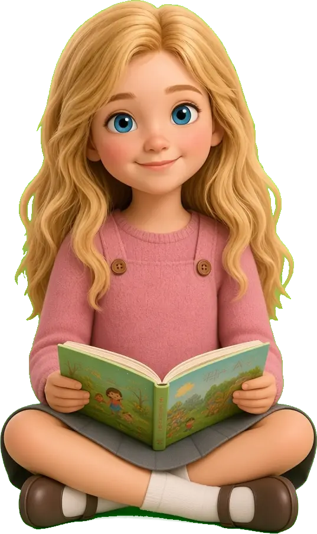
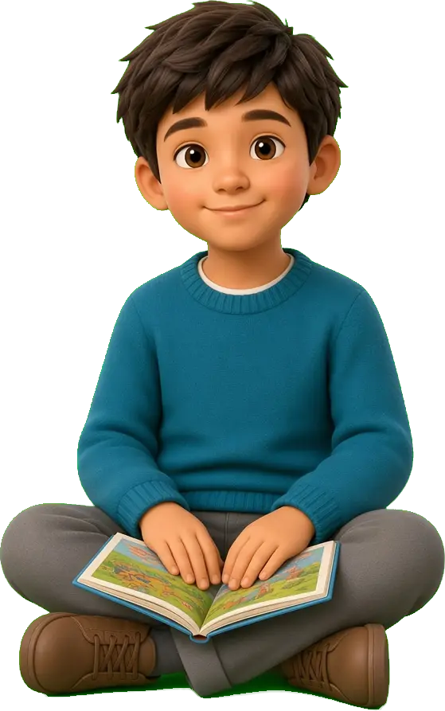
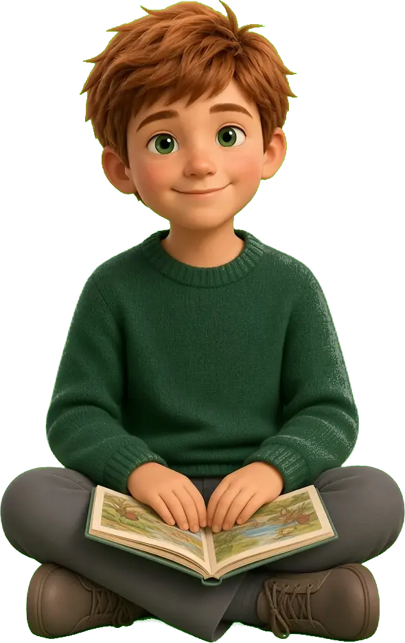
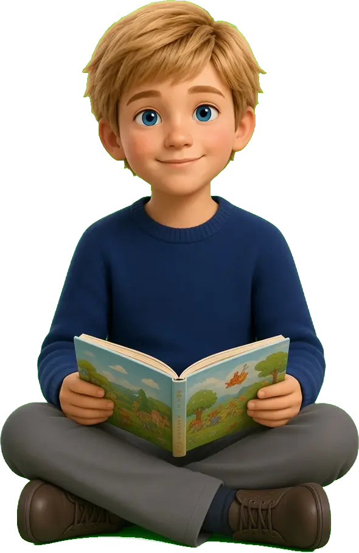

Standard card
Shared radius, shadow, and padding.
Reference
This page is not part of the product. Later migrations should match these components. School colour is a theme, not a second system.
Classroom display
Body copy stays in Nunito. A long sentence should stay comfortable to read for a teacher scanning a class list.
Small help text
Label
Expressive story type is Lora, used for reading, not for buttons.
A very long classroom instruction that should stay inside the button without looking like a browser default.
Shared radius, shadow, and padding.
Lifts on hover. Focus ring on keyboard.
Family context can be warmer.

28 pupils
A quieter block for forms and notes.



Year 3 School accent
Saved. The class is on the school record.
Check this. The year group is still empty.
Not saved. Wondii could not reach the school record.
Pupils join with a code. They do not need an account.
That’s it. The path was complete.
Try another way. The bulb still needs a full loop.
Still on this device. The school save will try again.
No classes yet
Add a class, then Wondii can keep the children’s names with the school.
No Adventures yet
Create one from what you are teaching this week.
No results yet
Results appear here after the class has played.
No stories yet
A story made on this account will show on the shelf.
School accent
Why won’t the bulb light?
Quieter cards. Same buttons and fields.